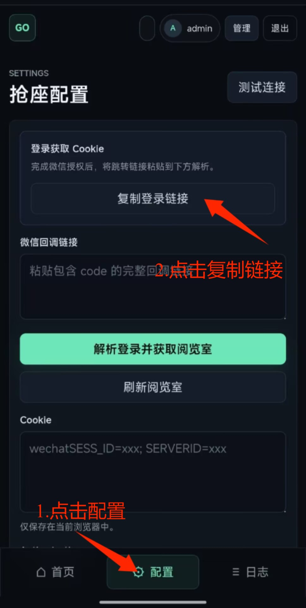
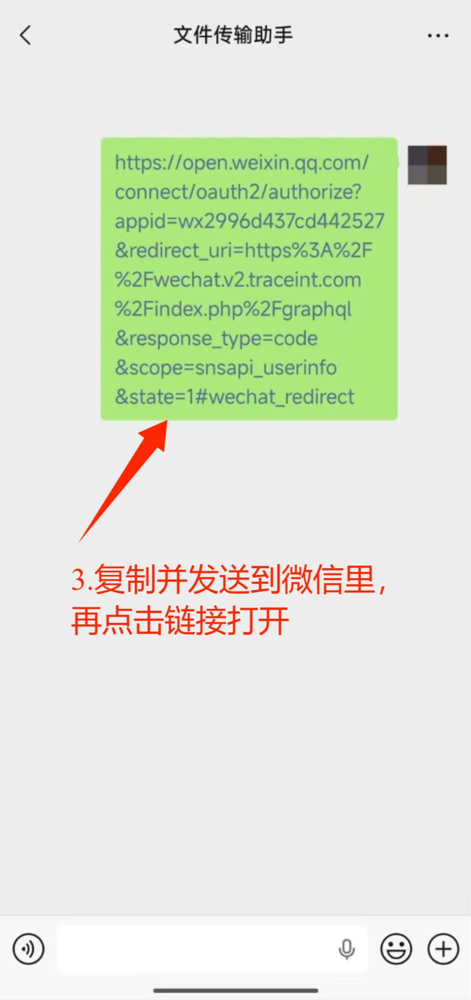
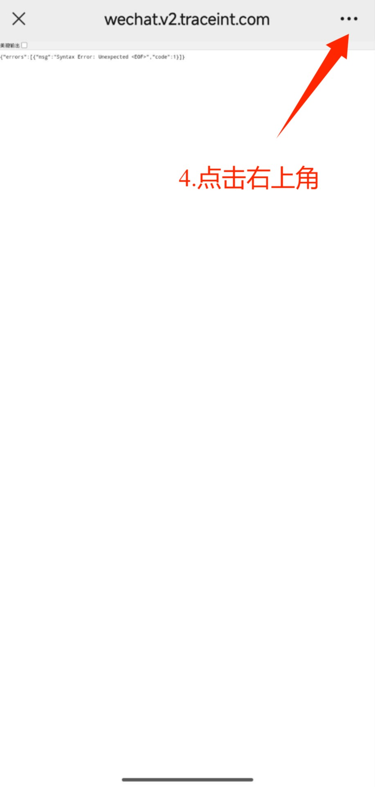
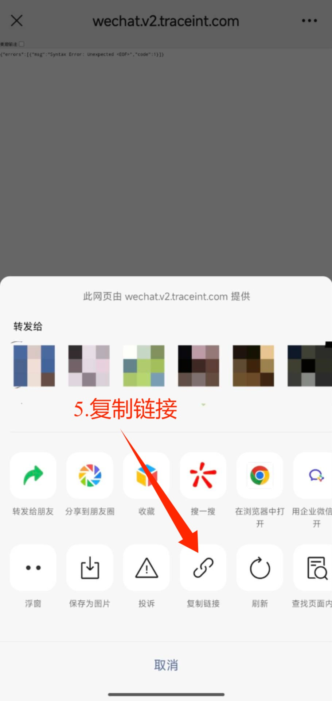
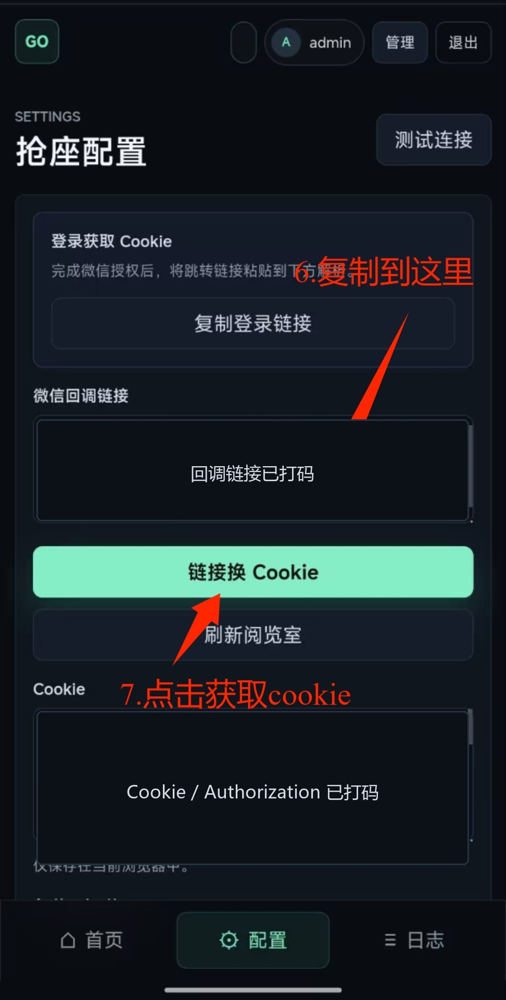

GET STARTED
gotolibray 使用教程
按照下面步骤获取微信登录 Cookie。整体流程是：在配置页复制登录链接，发送到微信并打开，复制微信回调链接，再回到配置页换取 Cookie。
操作步骤
-
1
进入配置页并复制登录链接
登录网站后，点击底部“配置”。在“登录获取 Cookie”区域点击“复制登录链接”。

-
2
把链接发送到微信并打开
将刚才复制的链接发送到微信聊天窗口，例如发给文件传输助手，然后在微信里点击这条链接打开。

-
3
打开右上角菜单
微信页面跳转后，右上角会有“...”菜单。页面中出现报错文字也没关系，只需要继续复制当前页面链接。

-
4
复制微信回调链接
在弹出的分享面板里，点击“复制链接”。这个链接里通常会带有 code 参数。

-
5
粘贴回调链接并获取 Cookie
回到 gotolibray 配置页，将复制到的链接粘贴到“微信回调链接”输入框，然后点击“解析登录并获取阅览室”。成功后 Cookie 会自动填入下方。

Cookie 只保存在当前浏览器中。不要把 Cookie、Authorization 或带 code 的回调链接发给别人。
如果提示登录失效，重新按教程复制登录链接并换取 Cookie 即可。